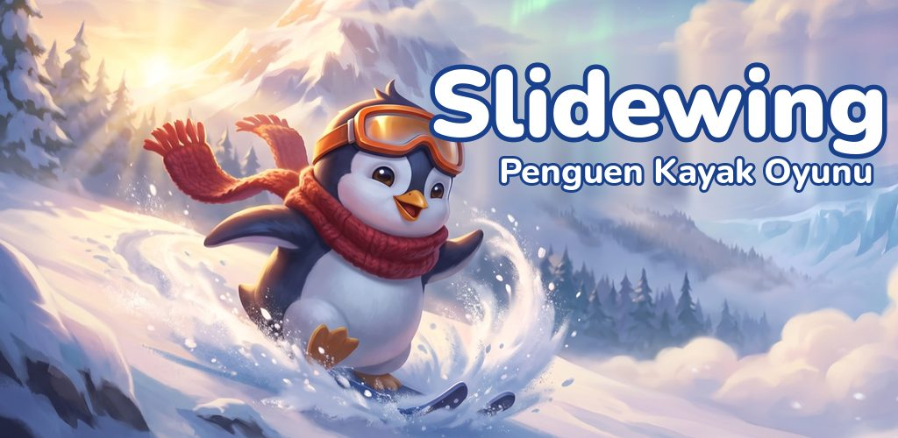
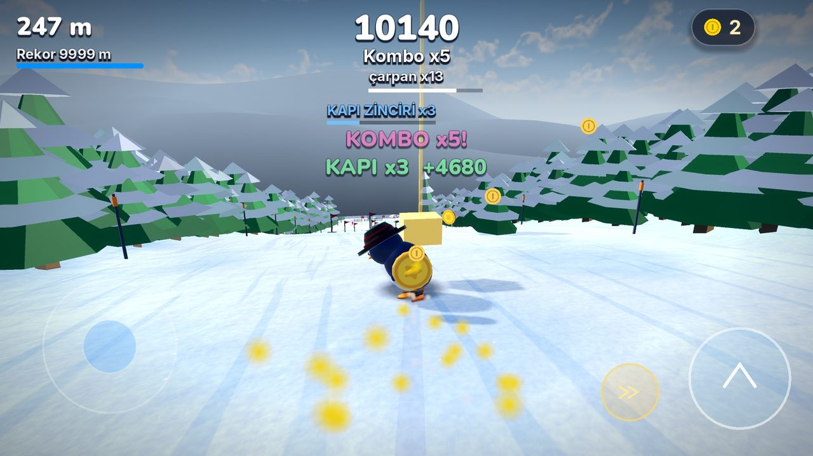
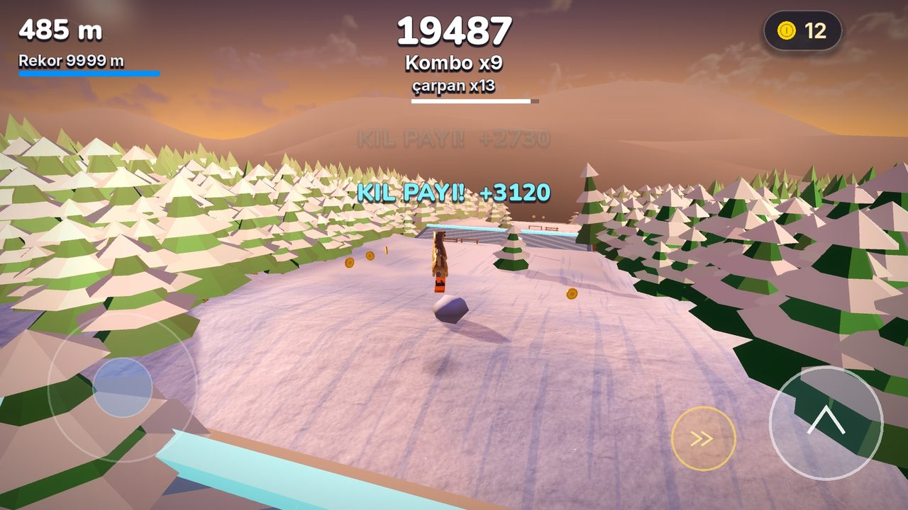
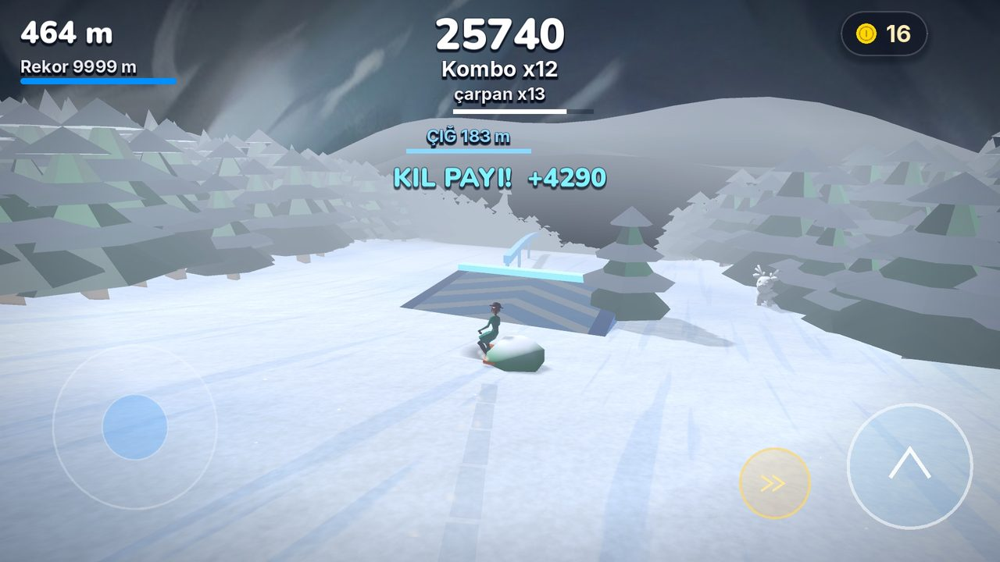
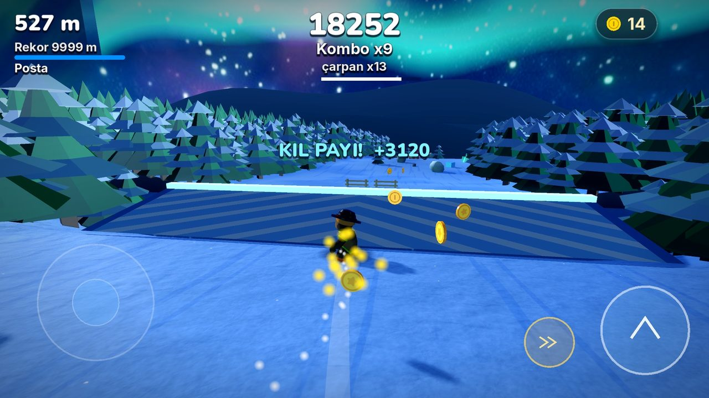
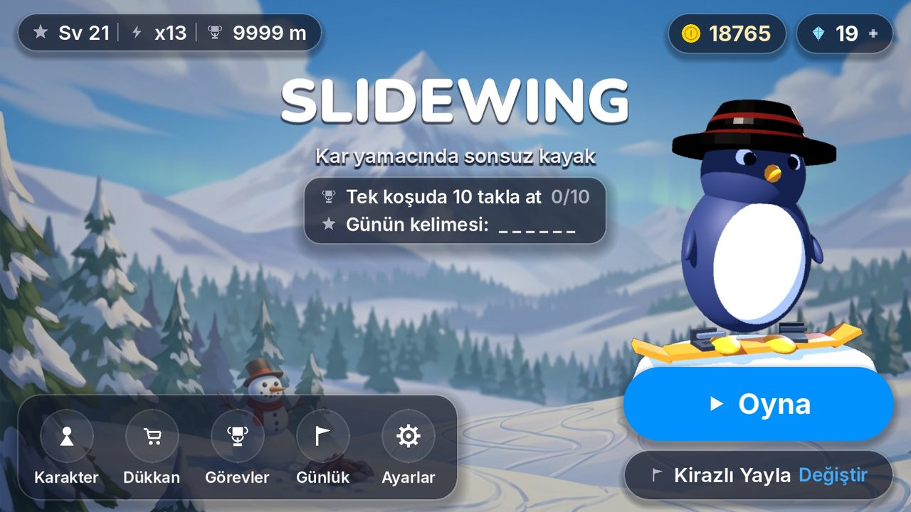
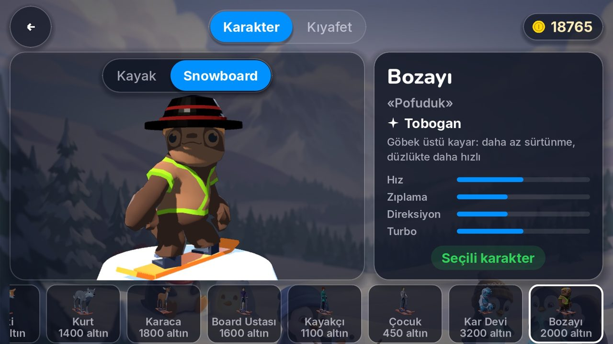

SlidewingPenguen kayak oyunu: karda kayma, takla ve çığ kaçışı
Penguenle karlı zirveden aşağı kay, virajı oy, rampadan uç ve havada takla at. Gerçek kayak fiziğiyle oynanan sonsuz bir kayak ve snowboard oyunu; çocuklar ve tüm aile için, internetsiz.
- İnternetsiz
- 6+ · PEGI 3
- Türkçe ve İngilizce
- Android

Gerçek gibi kayak
Gerçek kayak fiziği
Kayaklar kenara basarak döner; çubuğu geri çekince kayakları yan çevirip yavaşlarsın. Rampalar seni gerçek bir yörüngeyle uçurur.
Takla ve kombolar
Ön ve arka takla, burgu ve yakalamaları birleştir, kombo yap, çarpanı büyüt.
Kolay kontrol
Ekrandaki çubukla ya da telefonu eğerek yön ver. Kötü bir iniş koşuyu bitirmez; çocuklar da kolayca öğrenir.
Kayak ya da snowboard
Her karakterle ister kayakla ister snowboardla in.
9 karlı dağ, 9 farklı kural
Türkiye'den ilham alan hayali dağlar; her birinin kendi kuralı var.
- Kirazlı YaylaSlalom kapılarından geç, zincir kur.
- KızılyamaçGün batımında dalgalı yamaçlarda hız kazan.
- YıldızlıgölYıldızlı gecede donmuş göllerin üstünden kay.
- BuzlukayaKristal buz tünellerinden geç.
- RüzgârlıbelYan rüzgâra karşı dengeni koru.
- ÇığlıdereArkandan gelen çığdan kaç.
- PamukyaylaDerin taze kar; hızın seni yüzeyde tutar.
- TurnabeliRampalar ve raylarla dolu kar parkı.
- KöknarlıÇam ağaçlarının arasından kay.
16 karakter: penguen, Kangal ve daha fazlası
Penguen, Kangal köpeği, tilki, kurt, karaca, bozayı, kardan adam Kartopu ve Kar Devi; yanında kayakçılar, snowboardcu, yarışçı, slalomcu, kayak hocası ve antrenör. Her karakterin kendi yeteneği var; 25 kıyafet ve aksesuar her karaktere tam oturur.
Oyundan görüntüler






Sık sorulan sorular
Slidewing ücretsiz mi?
Evet, indirmesi ve oynaması ücretsiz. İsteğe bağlı uygulama içi satın almalar vardır; oyunu bitirmek için gerekmez.
İnternetsiz oynanır mı?
Evet. Oyun tamamen internetsiz oynanır; internet yalnızca isteğe bağlı bir satın alma yaparken gerekir.
Çocuklar için uygun mu?
Evet. 6 yaş ve üzeri çocuklar için tasarlandı ve PEGI 3 olarak derecelendirildi. 13 yaş altındaki oyuncularda her satın almadan önce bir ebeveyn kontrolü çıkar.
Oyunda reklam var mı?
Bu sürümde reklam yok. İleride isteğe bağlı ödüllü reklam eklenirse 13 yaş altındaki oyunculara hiçbir zaman gösterilmez.
Hangi cihazlarda çalışır?
Android 7.0 ve üzeri, 64 bit Android telefon ve tabletlerde çalışır. Şimdilik iPhone sürümü yok.
Kişisel veri topluyor mu?
Hayır. İlerlemen yalnızca cihazında saklanır; bize hiçbir kişisel veri gönderilmez. Ayrıntılar gizlilik politikasında.